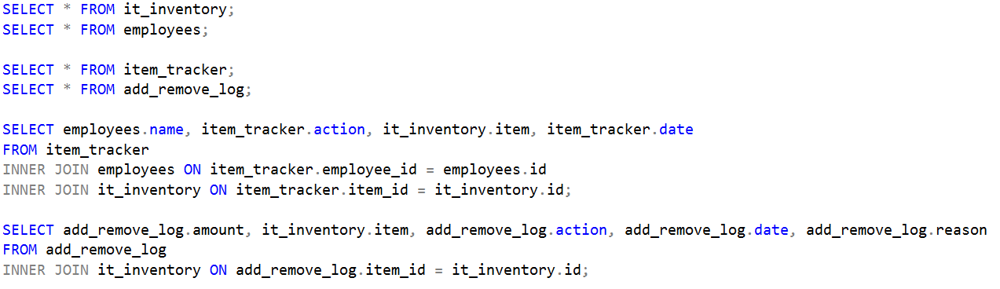
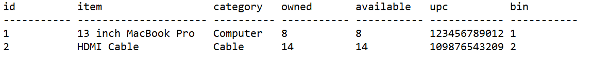
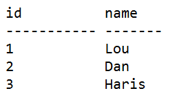
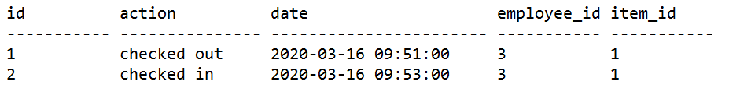
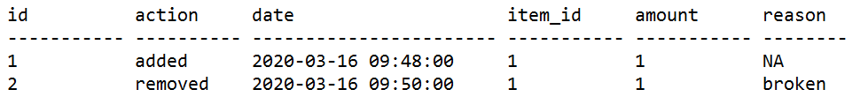
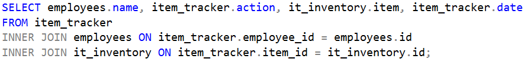
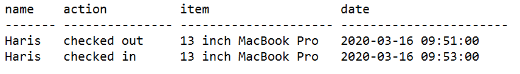
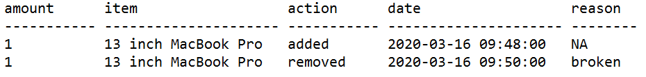

IT Inventory Management
Viewing Advanced Data
Often times, you may wish to view data that is not displayed during regular usage of the Inventory Management System. To do so, a handful of SQL queries are saved on the server. These are saved at D:\Program Files\Microsoft SQL Server\MSSQL13.MSSQLSERVER\MSSQL\DATA as view_data.sql

We will now go into each query as well as the table it produces.


Here we have two very similar and simple tables. The queries shown use an
asterisk to select all columns from the it_inventory and employees tables
respectively. The resulting tables are shown containing some example data
used during development to test functionality.
Viewing the it_inventory will likely be an especially common practice in
order to view the current state of the IT inventory. Owned and available
numbers are changed by normal usage and numbers shown here will be the
same as numbers shown within the app.


Next are tables that track when an item is checked in or out and when an
item is added or removed from the inventory. The item tracker is for the
purpose of seeing who is checking items in or out, when, and how many. The
add/remove log tracks items being added to and removed from the inventory,
when they are added/removed, the amount, and the reason.
As you may have noticed, these two simple queries are only useful insofar
as one knows the item's and employee's IDs. For this reason, queries were
written to give a simplified view for the purpose of tracking these
important pieces of data.



These queries are a bit more complex, but the tables they produce make
viewing changes to the inventory much more easily read. In fact, they are
structured so that they can be read in a more natural way. For example,
"Haris checked out a 13 inch MacBook Pro on 2020-03-16." or "One 13 inch
MacBook Pro was removed on 2020-03-16 because it was broken."
The queries here use Inner Joins in order to select matching values
between two tables. This, in turn, makes it possible to display an item
or employee name in a table, as opposed to the more vague IDs.